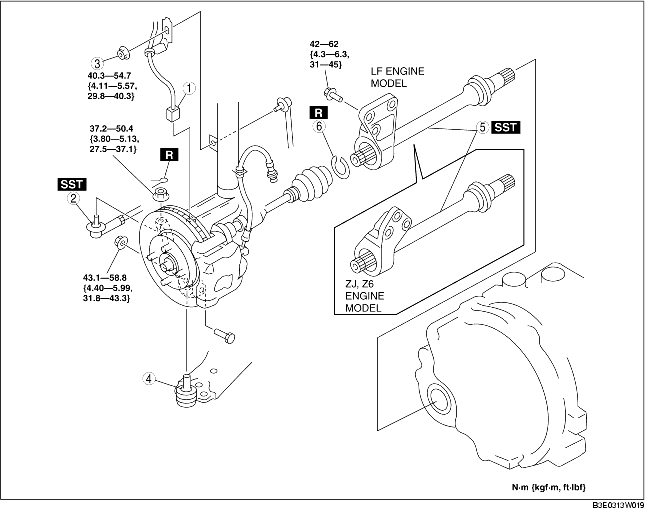

1. Drain the transaxle oil. (See TRANSAXLE OIL REPLACEMENT [F35M-R].) (See AUTOMATIC TRANSAXLE FLUID (ATF) REPLACEMENT.)
2. Remove in the order indicated in the table.
3. Install in the reverse order of removal.

.
|
1
|
ABS wheel-speed sensor connector
|
|
2
|
Tie-rod end ball joint
|
|
3
|
Stabilizer control link upper nut
|
|
4
|
Front lower arm ball joint
|
|
5
|
Joint shaft
(See Joint Shaft Removal Note.)
|
|
6
|
Clip
(See Clip Installation Note.)
|
1. Disconnect the drive shaft (RH) from the joint shaft by tapping the transaxle side outer ring with a brass bar and hammer.
2. Disconnect the joint shaft bracket from the cylinder block and remove the joint shaft.
3. Install the SST to the transaxle after the joint shaft is removed.
1. Install a new joint shaft clip to the clip groove at the end of the joint shaft with the clip opening facing upward and the clip width within the specification.
2. After installation, measure the outer diameter.